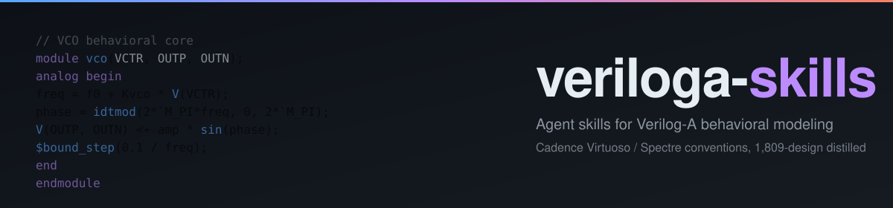

Agent skills for Verilog-A behavioral modeling targeting Cadence Virtuoso / Spectre. Rules and patterns distilled from 1,809 real .va designs — generated code is ready to drop into a Virtuoso cellview.
Rules and patterns extracted from a curated corpus of real Verilog-A behavioral models, not synthetic toy examples.
Port declaration style, supply handling, contribution forms, time-step control, EVAS & Spectre portability — enforced before the agent writes a line.
From SAR ADC logic to PLL clocking to switched-cap integrators — each with reference patterns the agent can compose.
| Skill | Role | Function |
|---|---|---|
| veriloga | Core — code writing | 8 mandatory rules + 13 circuit-category references + curated core DUT examples; produces Verilog-A ready to drop into a Virtuoso cellview. |
| evas-sim | Optional — voltage-domain verification | Drives the EVAS event-driven simulator to verify voltage-domain modules (SAR logic, DFF, counter, …). |
| openvaf | Optional — current-domain verification | OpenVAF compile → ngspice / OSDI load → simulation verification. |
veriloga handles all code writing on its own. evas-sim and openvaf are optional companion skills for local verification.
| Domain | Deciding criterion | Tool |
|---|---|---|
| Voltage | V() <+ + @(cross()) / transition(), no I() <+ |
EVAS event-driven simulator |
| Current | I() <+ / ddt() / idt() / laplace_nd() |
openvaf skill + ngspice OSDI |
Full domain classification: veriloga/references/domain-routing.md
Run from the project root. Installs into .agent/skills/ — only this project sees the skills.
git clone --depth 1 https://github.com/Arcadia-1/veriloga-skills /tmp/veriloga-skills \
&& mkdir -p .agent/skills \
&& cp -r /tmp/veriloga-skills/{veriloga,evas-sim,openvaf} .agent/skills/ \
&& rm -rf /tmp/veriloga-skillsInstalls into ~/.agent/skills/ — all projects see the skills.
git clone --depth 1 https://github.com/Arcadia-1/veriloga-skills /tmp/veriloga-skills \
&& mkdir -p ~/.agent/skills \
&& cp -r /tmp/veriloga-skills/{veriloga,evas-sim,openvaf} ~/.agent/skills/ \
&& rm -rf /tmp/veriloga-skillsRun /skills in the Agent; confirm veriloga, evas-sim, and openvaf appear in the output list.
veriloga/references/customize.md to override port naming conventions, supply voltages, file-header templates, simulator-specific options, etc.Each card opens the full reference markdown on GitHub.